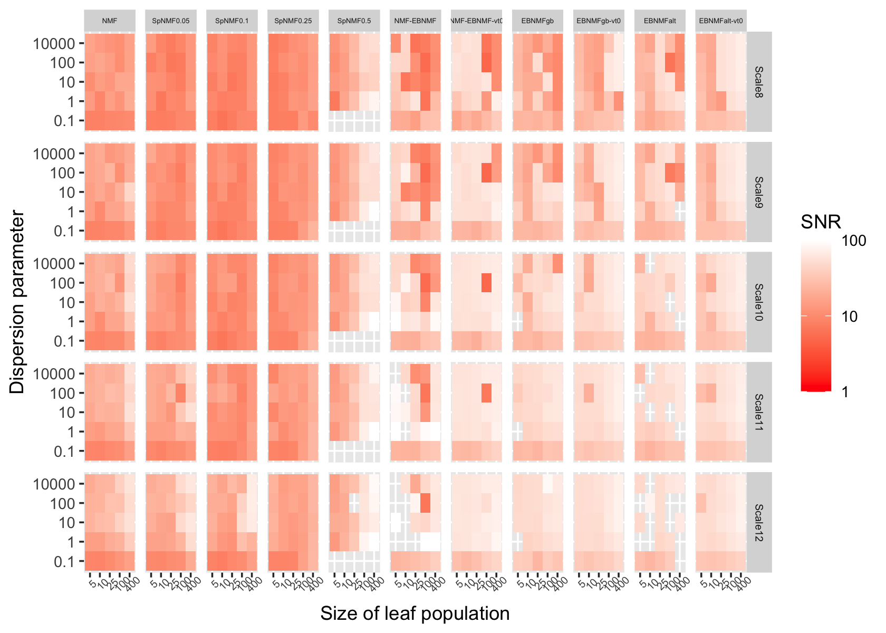

NMF analyses of simulated data, Scenario 3
Jason Willwerscheid and Peter Carbonetto
Last updated: 2025-08-15
Checks: 6 1
Knit directory: ebnmf-paper/
This reproducible R Markdown analysis was created with workflowr (version 1.7.1). The Checks tab describes the reproducibility checks that were applied when the results were created. The Past versions tab lists the development history.
Great! Since the R Markdown file has been committed to the Git repository, you know the exact version of the code that produced these results.
Great job! The global environment was empty. Objects defined in the global environment can affect the analysis in your R Markdown file in unknown ways. For reproduciblity it’s best to always run the code in an empty environment.
The command set.seed(20231214) was run prior to running
the code in the R Markdown file. Setting a seed ensures that any results
that rely on randomness, e.g. subsampling or permutations, are
reproducible.
Great job! Recording the operating system, R version, and package versions is critical for reproducibility.
- unnamed-chunk-4
To ensure reproducibility of the results, delete the cache directory
sim_scenario3_cache and re-run the analysis. To have
workflowr automatically delete the cache directory prior to building the
file, set delete_cache = TRUE when running
wflow_build() or wflow_publish().
Great job! Using relative paths to the files within your workflowr project makes it easier to run your code on other machines.
Great! You are using Git for version control. Tracking code development and connecting the code version to the results is critical for reproducibility.
The results in this page were generated with repository version 9232e56. See the Past versions tab to see a history of the changes made to the R Markdown and HTML files.
Note that you need to be careful to ensure that all relevant files for
the analysis have been committed to Git prior to generating the results
(you can use wflow_publish or
wflow_git_commit). workflowr only checks the R Markdown
file, but you know if there are other scripts or data files that it
depends on. Below is the status of the Git repository when the results
were generated:
Ignored files:
Ignored: .DS_Store
Ignored: .Rhistory
Ignored: .Rproj.user/
Ignored: analysis/figure/
Ignored: analysis/lps_fail_fix_cache/
Ignored: analysis/sim_scenario1_cache/
Ignored: analysis/sim_scenario2_cache/
Ignored: analysis/sim_scenario3_cache/
Untracked files:
Untracked: analysis/simdata3.Rmd
Untracked: matlab/simdata3.m
Untracked: matlab/simdata3.mat
Untracked: matlab/simdata3_nmf_sW=0.5.mat
Untracked: matlab/simdata3_nmf_sW=0.6.mat
Untracked: matlab/simdata3_nmf_vanilla.mat
Untracked: matlab/simdata_scenario1.m
Untracked: matlab/simdata_scenario1.mat
Untracked: matlab/simdata_scenario1_k=4_sW=
Untracked: matlab/simdata_scenario1_k=4_sW=0.1.mat
Untracked: matlab/simdata_scenario1_k=4_sW=0.2.mat
Untracked: matlab/simdata_scenario1_k=4_sW=0.3.mat
Untracked: matlab/simdata_scenario1_k=4_sW=0.4.mat
Untracked: matlab/simdata_scenario1_k=4_sW=0.5.mat
Untracked: matlab/simdata_scenario1_k=4_sW=0.6.mat
Untracked: matlab/simdata_scenario1_k=4_sW=0.7.mat
Untracked: matlab/simdata_scenario1_k=4_sW=0.8.mat
Untracked: matlab/simdata_scenario1_k=4_sW=0.9.mat
Untracked: matlab/simdata_scenario1_k=8_sW=
Untracked: matlab/simdata_scenario1_k=8_sW=0.1.mat
Untracked: matlab/simdata_scenario1_k=8_sW=0.2.mat
Untracked: matlab/simdata_scenario1_k=8_sW=0.3.mat
Untracked: matlab/simdata_scenario1_k=8_sW=0.4.mat
Untracked: matlab/simdata_scenario1_k=8_sW=0.5.mat
Untracked: matlab/simdata_scenario1_k=8_sW=0.6.mat
Untracked: matlab/simdata_scenario1_k=8_sW=0.7.mat
Untracked: matlab/simdata_scenario1_k=8_sW=0.8.mat
Untracked: matlab/simdata_scenario1_k=8_sW=0.9.mat
Untracked: matlab/simdata_scenario1_nmf_k=4.mat
Untracked: matlab/simdata_scenario1_nmf_k=4_sW=0.5.mat
Untracked: matlab/simdata_scenario1_nmf_k=8.mat
Untracked: matlab/simdata_scenario1_nmf_sW=0.3.mat
Untracked: matlab/simdata_scenario1_nmf_sW=0.4.mat
Untracked: matlab/simdata_scenario1_nmf_sW=0.5.mat
Untracked: matlab/simdata_scenario1_nmf_sW=0.6.mat
Untracked: matlab/simdata_scenario1_nmf_sW=0.8.mat
Untracked: matlab/simdata_scenario1_nmf_vanilla.mat
Untracked: matlab/simdata_scenario2.asv
Untracked: matlab/simdata_scenario2.m
Untracked: matlab/simdata_scenario2.mat
Untracked: matlab/simdata_scenario2_k=3_sW=0.1.mat
Untracked: matlab/simdata_scenario2_k=3_sW=0.2.mat
Untracked: matlab/simdata_scenario2_k=3_sW=0.3.mat
Untracked: matlab/simdata_scenario2_k=3_sW=0.4.mat
Untracked: matlab/simdata_scenario2_k=3_sW=0.5.mat
Untracked: matlab/simdata_scenario2_k=3_sW=0.6.mat
Untracked: matlab/simdata_scenario2_k=3_sW=0.7.mat
Untracked: matlab/simdata_scenario2_k=3_sW=0.8.mat
Untracked: matlab/simdata_scenario2_k=3_sW=0.9.mat
Untracked: matlab/simdata_scenario2_k=8_sW=0.1.mat
Untracked: matlab/simdata_scenario2_k=8_sW=0.2.mat
Untracked: matlab/simdata_scenario2_k=8_sW=0.3.mat
Untracked: matlab/simdata_scenario2_k=8_sW=0.4.mat
Untracked: matlab/simdata_scenario2_k=8_sW=0.5.mat
Untracked: matlab/simdata_scenario2_k=8_sW=0.6.mat
Untracked: matlab/simdata_scenario2_k=8_sW=0.7.mat
Untracked: matlab/simdata_scenario2_k=8_sW=0.8.mat
Untracked: matlab/simdata_scenario2_k=8_sW=0.9.mat
Untracked: matlab/simdata_scenario2_nmf_k=6.mat
Untracked: matlab/simdata_scenario2_nmf_sW=0.2.mat
Untracked: matlab/simdata_scenario2_nmf_sW=0.3.mat
Untracked: matlab/simdata_scenario2_nmf_sW=0.4.mat
Untracked: matlab/simdata_scenario2_nmf_sW=0.5.mat
Untracked: matlab/simdata_scenario2_nmf_sW=0.6.mat
Untracked: matlab/simdata_scenario2_nmf_vanilla.mat
Untracked: matlab/simdata_scenario3.mat
Untracked: matlab/simdata_scenario3_k=12_sW=0.1.mat
Untracked: matlab/simdata_scenario3_k=12_sW=0.2.mat
Untracked: matlab/simdata_scenario3_k=12_sW=0.3.mat
Untracked: matlab/simdata_scenario3_k=12_sW=0.4.mat
Untracked: matlab/simdata_scenario3_k=12_sW=0.5.mat
Untracked: matlab/simdata_scenario3_k=12_sW=0.6.mat
Untracked: matlab/simdata_scenario3_k=12_sW=0.7.mat
Untracked: matlab/simdata_scenario3_k=12_sW=0.8.mat
Untracked: matlab/simdata_scenario3_k=12_sW=0.9.mat
Untracked: matlab/simdata_scenario3_k=7_sW=0.1.mat
Untracked: matlab/simdata_scenario3_k=7_sW=0.2.mat
Untracked: matlab/simdata_scenario3_k=7_sW=0.3.mat
Untracked: matlab/simdata_scenario3_k=7_sW=0.4.mat
Untracked: matlab/simdata_scenario3_k=7_sW=0.5.mat
Untracked: matlab/simdata_scenario3_k=7_sW=0.6.mat
Untracked: matlab/simdata_scenario3_k=7_sW=0.7.mat
Untracked: matlab/simdata_scenario3_k=7_sW=0.8.mat
Untracked: matlab/simdata_scenario3_k=7_sW=0.9.mat
Untracked: output/sim_scenario1.rds
Unstaged changes:
Modified: analysis/sim_scenario1.Rmd
Modified: analysis/sim_scenario2.Rmd
Modified: analysis/simdata2.Rmd
Modified: matlab/simdata2.mat
Note that any generated files, e.g. HTML, png, CSS, etc., are not included in this status report because it is ok for generated content to have uncommitted changes.
These are the previous versions of the repository in which changes were
made to the R Markdown (analysis/sim_scenario3.Rmd) and
HTML (docs/sim_scenario3.html) files. If you’ve configured
a remote Git repository (see ?wflow_git_remote), click on
the hyperlinks in the table below to view the files as they were in that
past version.
| File | Version | Author | Date | Message |
|---|---|---|---|---|
| Rmd | 9232e56 | Jason Willwerscheid | 2025-08-15 | workflowr::wflow_publish("analysis/sim_scenario3.Rmd") |
library(R.matlab)
library(tibble)
library(dplyr)
library(tidyr)
library(stringr)
library(ggplot2)
library(cowplot)
library(ebnm)
library(flashier)
library(fastTopics)
source("code/swimmer_functions.R")We use three different fitting methods:
“NMF”: Uses package
NNLM. As is common practice, we do 10 trials and choose the fit with the lowest error.“NMF-EBNMF”: EBNMF using an NMF initialization. We test
var_type = 0andvar_type2; we refer to these submethods as “NMF-EBNMF0” and “NMF-EBNMF2”.“EBNMF”: An EBNMF fit produced by alternatively adding one “greedy” factor and running 10 backfitting iterations (so, we backfit after each new factor is added). After no new factor can be added, we perform a full backfit. We again test
var_type = 0andvar_type2, giving “EBNMF0” and “EBNMF2”.
The fitting functions appear as follows:
run_nmf <- function(Y, k, ntrials = 10) {
cat("Running NMF")
t <- system.time({
best_mse <- Inf
for (i in 1:ntrials) {
cat(".")
set.seed(i)
next_res <- NNLM::nnmf(Y, k = k, verbose = 0)
if (min(next_res$mse) < best_mse) {
best_mse <- min(next_res$mse)
best_res <- next_res
}
}
})
cat("\n")
return(list(t = t, fit = best_res))
}
run_ebnmf_from_nmf <- function(Y, nmf_res, var_type, maxiter = 2000) {
cat("Running EBNMF from NMF:\n")
t <- system.time({
fl <- flash_init(Y, var_type = var_type) |>
flash_factors_init(list(nmf_res$W, t(nmf_res$H)), ebnm_fn = ebnm_point_exponential) |>
flash_backfit(maxiter = maxiter, verbose = 0) |>
flash_nullcheck(verbose = 0)
})
return(list(t = t, fit = fl))
}
run_alternating_gb <- function(Y, Kmax, var_type = 2) {
cat("Running alternating EBNMF")
t <- system.time({
fl <- flash_init(Y, var_type = var_type) |>
flash_set_verbose(0)
keep_going <- TRUE
while(keep_going) {
cat(".")
current_n <- fl$n_factors
fl <- fl |>
flash_greedy(ebnm_fn = ebnm_point_exponential) |>
flash_backfit(maxiter = 10)
if (fl$n_factors == current_n | fl$n_factors == Kmax) {
keep_going <- FALSE
}
}
cat("\n")
fl <- fl |>
flash_backfit(maxiter = 2000, verbose = 0) |>
flash_nullcheck(verbose = 0)
})
return(list(t = t, fit = fl))
}In this analysis we consider the “hierarchical” scenario. Here there
are seven topics: a “root” topic shared by four populations, two
“branch” topics shared by two populations each, and four “leaf” topics
that are unique to one population each. We also add 7 populations
consisting of “anchor documents.” We fix the size of the
hierarchically-related populations at 250 and vary the number of anchor
documents from 2 to 100 per population. The L matrix codes
population memberships. The factors F and the log1p link
function are as in the previous analysis.
sim_data <- function(ns, p, gamma_shape, gamma_scale, n_anchor_words = 10, link = "log1p") {
k <- 7
# Loadings (document-topics):
L <- matrix(0, nrow = sum(ns), ncol = k)
L[, 7] <- c(rep(1/3, sum(ns[1:4])), rep(1, ns[5]), rep(0, sum(ns[6:11]))) # root
L[, 5] <- c(rep(1/3, sum(ns[1:2])), rep(0, sum(ns[3:5])), rep(1, ns[6]), rep(0, sum(ns[7:11]))) # branch 1
L[, 6] <- c(rep(0, sum(ns[1:2])), rep(1/3, sum(ns[3:4])), rep(0, sum(ns[5:6])), rep(1, ns[7]), rep(0, sum(ns[8:11]))) # branch 2
L[, 1] <- c(rep(1/3, ns[1]), rep(0, sum(ns[2:7])), rep(1, ns[8]), rep(0, sum(ns[9:11]))) # leaf 1
L[, 2] <- c(rep(0, ns[1]), rep(1/3, ns[2]), rep(0, sum(ns[3:8])), rep(1, ns[9]), rep(0, sum(ns[10:11]))) # leaf 2
L[, 3] <- c(rep(0, sum(ns[1:2])), rep(1/3, ns[3]), rep(0, sum(ns[4:9])), rep(1, ns[10]), rep(0, ns[11])) # leaf 3
L[, 4] <- c(rep(0, sum(ns[1:3])), rep(1/3, ns[4]), rep(0, sum(ns[5:10])), rep(1, ns[11])) # leaf 4
set.seed(1)
F <- matrix(rgamma(p * k, shape = gamma_shape, scale = gamma_scale), nrow = p, ncol = k)
# Anchor words
n_anchor_words <- 10
for (i in 1:k) {
F[((i - 1) * n_anchor_words + 1):(i * n_anchor_words), setdiff(1:k, i)] <- 0
}
mu <- L %*% t(F)
if (link == "identity") {
Y <- matrix(rpois(sum(ns) * p, mu), nrow = sum(ns), ncol = p)
} else if (link == "log1p") {
Y <- matrix(log1p(rpois(sum(ns) * p, expm1(mu))), nrow = sum(ns), ncol = p)
}
# Make sure there aren't any all-zero columns:
F <- F[apply(Y, 2, sum) > 0, ]
Y <- Y[, apply(Y, 2, sum) > 0]
rownames(Y) <- paste0("sample", 1:nrow(Y))
colnames(Y) <- paste0("feature", 1:ncol(Y))
return(list(Y = Y, L = L, F = F))
}The metrics are as in the previous analysis.
calc_metrics <- function(res, sim_dat) {
fit <- res$fit
if (inherits(fit, "flash")) {
LDF <- ldf(fit, type = "f")
LL <- t(t(LDF$L) * LDF$D)
FF <- t(t(LDF$F) * LDF$D)
} else {
Wscale <- sqrt(apply(fit$W, 2, function(x) sum(x^2)))
Hscale <- sqrt(apply(fit$H, 1, function(x) sum(x^2)))
D <- Wscale * Hscale
LL <- t(t(fit$W) / sqrt(Wscale) * sqrt(Hscale))
FF <- t(fit$H / sqrt(Hscale) * sqrt(Wscale))
}
# Metrics for components 1-7 are correlations:
LL_cors <- FF_cors <- rep(NA, ncol(sim_dat$L))
used_cols <- numeric(0)
LL_cormat <- cor(sim_dat$L, LL)
FF_cormat <- cor(sim_dat$F, FF)
for (i in 1:min(ncol(sim_dat$L), ncol(LL))) {
rowmax <- which.max(apply(abs(LL_cormat), 1, max))
colmax <- which.max(apply(abs(LL_cormat), 2, max))
LL_cors[rowmax] <- LL_cormat[rowmax, colmax]
FF_cors[rowmax] <- FF_cormat[rowmax, colmax]
LL_cormat[, colmax] <- 0
LL_cormat[rowmax, ] <- 0
used_cols <- c(used_cols, colmax)
}
# Metrics for 8-12 are the scales of these (redundant/noisy) components:
L_scales <- apply(LL, 2, function(x) sum(x^2))
L_scales <- L_scales / sum(L_scales)
unmatched_scales <- L_scales[-used_cols]
unmatched_scales <- sort(unmatched_scales, decreasing = TRUE)
unmatched_scales <- c(unmatched_scales, rep(NA, 5 - length(unmatched_scales)))
all_metrics <- c(LL_cors, FF_cors, unmatched_scales)
names(all_metrics) <- c(
paste0("LLcor", 1:7),
paste0("FFcor", 1:7),
paste0("Scale", 8:12)
)
return(all_metrics)
}
next_tib <- function(shape, ns, method, Kmax, res, sim_dat) {
metrics <- calc_metrics(res, sim_dat)
return(tibble(
method = method,
Kmax = Kmax,
n_anchor_docs = ns[8],
shape = shape,
metric_type = c("t_elapsed", names(metrics)),
metric_val = c(res$t[3], metrics)
))
}Run simulations. We consider results for when the true
K = 7 is given in advance as well as for when
K is overspecified (here, Kmax = 12):
all_res <- tibble()
set.seed(1)
for (n_anchor_docs in c(2, 5, 10, 25, 50, 100)) {
for (shape in c(0.25, 0.33, 0.5, 0.75, 1, 2, 4)) {
cat("ANCHOR DOCS: ", n_anchor_docs, "SHAPE: ", shape, "\n")
gamma_mean <- 1
scale <- gamma_mean / shape
ns <- c(rep(250, 4), rep(n_anchor_docs, 7))
p <- 500
sim_dat <- sim_data(ns, p, gamma_shape = shape, gamma_scale = scale)
Y <- sim_dat$Y
nmf_res_k7 <- run_nmf(Y, k = 7)
all_res <- all_res |>
bind_rows(next_tib(shape, ns, "NMF", 7, nmf_res_k7, sim_dat))
all_res <- all_res |>
bind_rows(next_tib(shape, ns, "NMF-EBNMF0", 7, run_ebnmf_from_nmf(Y, nmf_res_k7$fit, var_type = 0), sim_dat))
all_res <- all_res |>
bind_rows(next_tib(shape, ns, "NMF-EBNMF2", 7, run_ebnmf_from_nmf(Y, nmf_res_k7$fit, var_type = 2), sim_dat))
all_res <- all_res |>
bind_rows(next_tib(shape, ns, "EBNMF0", 7, run_alternating_gb(Y, Kmax = 7, var_type = 0), sim_dat))
all_res <- all_res |>
bind_rows(next_tib(shape, ns, "EBNMF2", 7, run_alternating_gb(Y, Kmax = 7, var_type = 2), sim_dat))
nmf_res_k12 <- run_nmf(Y, k = 12)
all_res <- all_res |>
bind_rows(next_tib(shape, ns, "NMF", 12, nmf_res_k12, sim_dat))
all_res <- all_res |>
bind_rows(next_tib(shape, ns, "NMF-EBNMF0", 12, run_ebnmf_from_nmf(Y, nmf_res_k12$fit, var_type = 0), sim_dat))
all_res <- all_res |>
bind_rows(next_tib(shape, ns, "NMF-EBNMF2", 12, run_ebnmf_from_nmf(Y, nmf_res_k12$fit, var_type = 2), sim_dat))
all_res <- all_res |>
bind_rows(next_tib(shape, ns, "EBNMF0", 12, run_alternating_gb(Y, Kmax = 12, var_type = 0), sim_dat))
all_res <- all_res |>
bind_rows(next_tib(shape, ns, "EBNMF2", 12, run_alternating_gb(Y, Kmax = 12, var_type = 2), sim_dat))
}
}
Warning: The above code chunk cached its results, but
it won’t be re-run if previous chunks it depends on are updated. If you
need to use caching, it is highly recommended to also set
knitr::opts_chunk$set(autodep = TRUE) at the top of the
file (in a chunk that is not cached). Alternatively, you can customize
the option dependson for each individual chunk that is
cached. Using either autodep or dependson will
remove this warning. See the
knitr cache options for more details.
Results, Kmax = 7
Correlations for L. Each row gives correlations for one
true component (one “population”), with rows arranged according to the
abundance of the population (in descending order). Individual tiles
correspond to individual simulations (a single combination of gamma
shape and shared population size):
plot_df <- all_res |> filter(Kmax == 7, str_starts(metric_type, "LLcor")) |>
mutate(n_anchor_docs = factor(n_anchor_docs),
shape = factor(shape),
method = factor(method, levels = c("NMF", "NMF-EBNMF2", "NMF-EBNMF0", "EBNMF2", "EBNMF0"))) |>
mutate(metric_val = pmin(metric_val, 0.9999))
ggplot(plot_df, aes(x = n_anchor_docs, y = shape, fill = metric_val)) +
geom_tile() +
scale_fill_gradient(low = "red", high = "blue", na.value = "red", transform = "logit") +
facet_grid(rows = vars(metric_type), cols = vars(method), scales = "free_x") +
labs(x = "Size of shared populations", y = "Shape of gamma prior on factors", fill = "Cor. w/ true L") +
theme(axis.text.x = element_text(angle = 45))
# Warning in qfun(x, ...): NaNs produced
# Warning in scale_fill_gradient(low = "red", high = "blue", na.value = "red", :
# prob-logis transformation introduced infinite values.
Correlations for F:
plot_df <- all_res |> filter(Kmax == 7, str_starts(metric_type, "FFcor")) |>
mutate(n_anchor_docs = factor(n_anchor_docs),
shape = factor(shape),
method = factor(method, levels = c("NMF", "NMF-EBNMF2", "NMF-EBNMF0", "EBNMF2", "EBNMF0"))) |>
mutate(metric_val = pmin(metric_val, 0.9999))
ggplot(plot_df, aes(x = n_anchor_docs, y = shape, fill = metric_val)) +
geom_tile() +
scale_fill_gradient(low = "red", high = "blue", na.value = "red", transform = "logit") +
facet_grid(rows = vars(metric_type), cols = vars(method), scales = "free_x") +
labs(x = "Size of rarest population", y = "Shape of gamma prior on factors", fill = "Cor. w/ true F") +
theme(axis.text.x = element_text(angle = 45))
# Warning in qfun(x, ...): NaNs produced
# Warning in scale_fill_gradient(low = "red", high = "blue", na.value = "red", :
# prob-logis transformation introduced infinite values.
Results, Kmax = 12
Correlations for L:
plot_df <- all_res |> filter(Kmax == 12, str_starts(metric_type, "LLcor")) |>
mutate(n_anchor_docs = factor(n_anchor_docs),
shape = factor(shape),
method = factor(method, levels = c("NMF", "NMF-EBNMF2", "NMF-EBNMF0", "EBNMF2", "EBNMF0"))) |>
mutate(metric_val = pmin(metric_val, 0.9999))
ggplot(plot_df, aes(x = n_anchor_docs, y = shape, fill = metric_val)) +
geom_tile() +
scale_fill_gradient(low = "red", high = "blue", na.value = "red", transform = "logit") +
facet_grid(rows = vars(metric_type), cols = vars(method), scales = "free_x") +
labs(x = "Size of rarest population", y = "Shape of gamma prior on factors", fill = "Cor. w/ true L") +
theme(axis.text.x = element_text(angle = 45))
# Warning in qfun(x, ...): NaNs produced
# Warning in scale_fill_gradient(low = "red", high = "blue", na.value = "red", :
# prob-logis transformation introduced infinite values.
Correlations for F:
plot_df <- all_res |> filter(Kmax == 12, str_starts(metric_type, "FFcor")) |>
mutate(n_anchor_docs = factor(n_anchor_docs),
shape = factor(shape),
method = factor(method, levels = c("NMF", "NMF-EBNMF2", "NMF-EBNMF0", "EBNMF2", "EBNMF0"))) |>
mutate(metric_val = pmin(metric_val, 0.9999))
ggplot(plot_df, aes(x = n_anchor_docs, y = shape, fill = metric_val)) +
geom_tile() +
scale_fill_gradient(low = "red", high = "blue", na.value = "red", transform = "logit") +
facet_grid(rows = vars(metric_type), cols = vars(method), scales = "free_x") +
labs(x = "Size of rarest population", y = "Shape of gamma prior on factors", fill = "Cor. w/ true F") +
theme(axis.text.x = element_text(angle = 45))
# Warning in qfun(x, ...): NaNs produced
# Warning in scale_fill_gradient(low = "red", high = "blue", na.value = "red", :
# prob-logis transformation introduced infinite values.
Scale of redundant/noisy factors. If any exist, they are arranged in descending order, with the largest redundant/noisy factor appearing in the top row:
plot_df <- all_res |> filter(Kmax == 12, str_starts(metric_type, "Scale")) |>
mutate(n_anchor_docs = factor(n_anchor_docs, ),
shape = factor(shape),
method = factor(method, levels = c("NMF", "NMF-EBNMF2", "NMF-EBNMF0", "EBNMF2", "EBNMF0")))
ggplot(plot_df, aes(x = n_anchor_docs, y = shape, fill = metric_val)) +
geom_tile() +
scale_fill_gradient(low = "white", high = "purple", na.value = "white") +
facet_grid(rows = vars(metric_type), cols = vars(method), scales = "free_x") +
labs(x = "Size of rarest population", y = "Shape of gamma prior on factors", fill = "Scale") +
theme(axis.text.x = element_text(angle = 45))Time elapsed
plot_df <- all_res |> filter(str_starts(metric_type, "t_elapsed")) |>
mutate(n_anchor_docs = factor(n_anchor_docs),
shape = factor(shape),
Kmax = factor(Kmax),
method = factor(method, levels = c("NMF", "NMF-EBNMF2", "NMF-EBNMF0", "EBNMF2", "EBNMF0")))
ggplot(plot_df, aes(x = n_anchor_docs, y = shape, fill = metric_val)) +
geom_tile() +
scale_fill_gradient(low = "white", high = "darkgreen", na.value = "black", transform = "log10") +
facet_grid(rows = vars(Kmax), cols = vars(method), scales = "free_x") +
labs(x = "Size of rarest population", y = "Shape of gamma prior on factors", fill = "Time elapsed (s)") +
theme(axis.text.x = element_text(angle = 45))
sessionInfo()
# R version 4.5.1 (2025-06-13)
# Platform: aarch64-apple-darwin20
# Running under: macOS Sequoia 15.5
#
# Matrix products: default
# BLAS: /Library/Frameworks/R.framework/Versions/4.5-arm64/Resources/lib/libRblas.0.dylib
# LAPACK: /Library/Frameworks/R.framework/Versions/4.5-arm64/Resources/lib/libRlapack.dylib; LAPACK version 3.12.1
#
# locale:
# [1] en_US.UTF-8/en_US.UTF-8/en_US.UTF-8/C/en_US.UTF-8/en_US.UTF-8
#
# time zone: America/New_York
# tzcode source: internal
#
# attached base packages:
# [1] stats graphics grDevices utils datasets methods base
#
# other attached packages:
# [1] fastTopics_0.6-192 flashier_1.0.56 ebnm_1.1-34 cowplot_1.2.0
# [5] ggplot2_3.5.2 stringr_1.5.1 tidyr_1.3.1 dplyr_1.1.4
# [9] tibble_3.3.0 R.matlab_3.7.0 workflowr_1.7.1
#
# loaded via a namespace (and not attached):
# [1] tidyselect_1.2.1 viridisLite_0.4.2 farver_2.1.2
# [4] R.utils_2.13.0 fastmap_1.2.0 lazyeval_0.2.2
# [7] promises_1.3.3 digest_0.6.37 lifecycle_1.0.4
# [10] processx_3.8.6 invgamma_1.2 magrittr_2.0.3
# [13] compiler_4.5.1 rlang_1.1.6 sass_0.4.10
# [16] progress_1.2.3 tools_4.5.1 yaml_2.3.10
# [19] data.table_1.17.8 knitr_1.50 labeling_0.4.3
# [22] prettyunits_1.2.0 htmlwidgets_1.6.4 scatterplot3d_0.3-44
# [25] RColorBrewer_1.1-3 Rtsne_0.17 withr_3.0.2
# [28] purrr_1.1.0 R.oo_1.27.1 grid_4.5.1
# [31] git2r_0.36.2 colorspace_2.1-1 scales_1.4.0
# [34] gtools_3.9.5 cli_3.6.5 rmarkdown_2.29
# [37] crayon_1.5.3 generics_0.1.4 RcppParallel_5.1.10
# [40] rstudioapi_0.17.1 httr_1.4.7 pbapply_1.7-2
# [43] cachem_1.1.0 splines_4.5.1 parallel_4.5.1
# [46] softImpute_1.4-3 vctrs_0.6.5 Matrix_1.7-3
# [49] jsonlite_2.0.0 callr_3.7.6 hms_1.1.3
# [52] mixsqp_0.3-54 ggrepel_0.9.6 irlba_2.3.5.1
# [55] horseshoe_0.2.0 trust_0.1-8 plotly_4.11.0
# [58] jquerylib_0.1.4 glue_1.8.0 ps_1.9.1
# [61] uwot_0.2.3 stringi_1.8.7 Polychrome_1.5.4
# [64] gtable_0.3.6 later_1.4.2 quadprog_1.5-8
# [67] pillar_1.11.0 htmltools_0.5.8.1 truncnorm_1.0-9
# [70] R6_2.6.1 rprojroot_2.1.0 evaluate_1.0.4
# [73] lattice_0.22-7 R.methodsS3_1.8.2 RhpcBLASctl_0.23-42
# [76] SQUAREM_2021.1 ashr_2.2-63 httpuv_1.6.16
# [79] bslib_0.9.0 Rcpp_1.1.0 deconvolveR_1.2-1
# [82] whisker_0.4.1 xfun_0.52 fs_1.6.6
# [85] getPass_0.2-4 pkgconfig_2.0.3